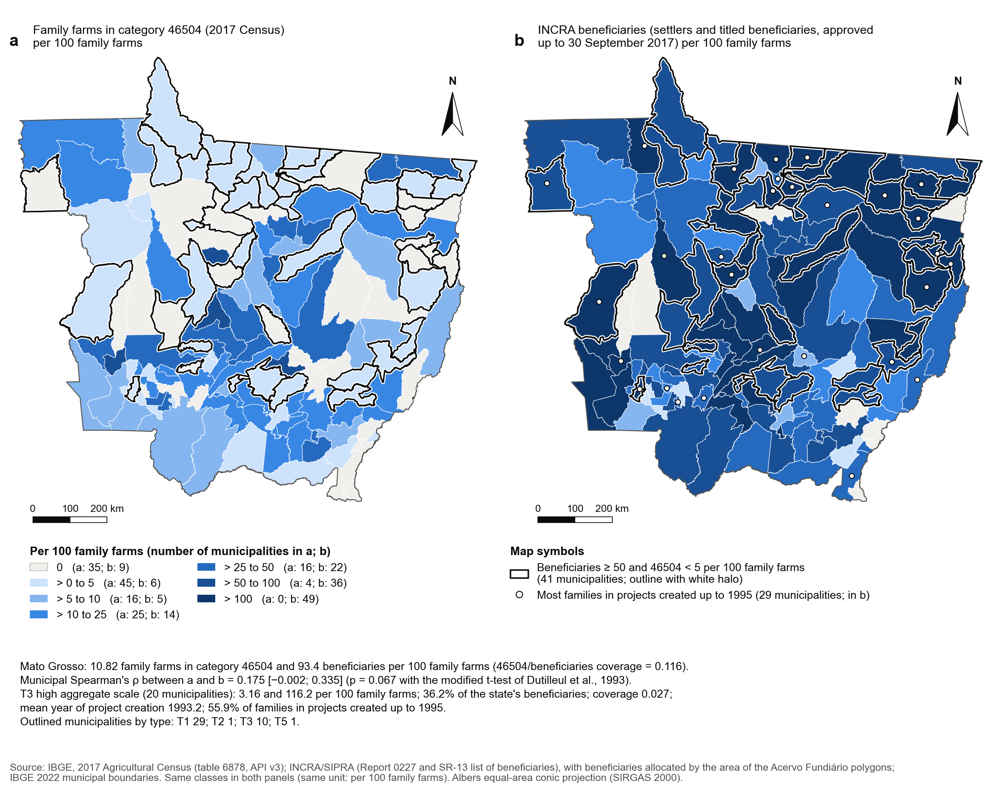
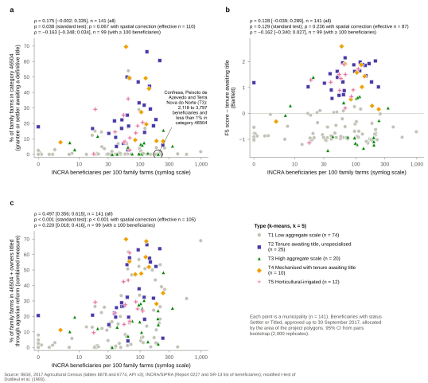

Preliminary version for the project team. Results may change as the study progresses.
English translation under review. If the two versions differ, the Portuguese text prevails.
Agricultural Census tenure data and agrarian reform
Agrarian reform and category 46504 of the 2017 Agricultural Census: results from Manuscript 1 (in preparation)
The 2017 Census category of grantee or settler awaiting a definitive title, compared with INCRA records
Context and objective
The Agricultural Census, conducted by the Brazilian Institute of Geography and Statistics (IBGE), asks producers about their land tenure status. One possible answer is grantee or settler awaiting a definitive title (2017 Census), coded as category 46504 in the IBGE Automatic Retrieval System (SIDRA). The category therefore records a declared tenure status. The Census does not ask whether an establishment is part of agrarian reform, and producers who have already received their title may declare themselves owners. Drawing on results from Manuscript 1, this page examines how far the category captures agrarian reform in Mato Grosso (MT).
Data and sources
The analysis compares three sets of records. The first covers establishments in the census category, as published by IBGE, both for family farms and for all establishments (family and non-family farms). The second covers agrarian-reform establishments identified in the Census by IBGE jointly with the National Institute for Colonisation and Agrarian Reform (INCRA), using multiple criteria. The third comes from INCRA’s administrative records: the projects in the Agrarian Reform Projects Information System (SIPRA) and the list of beneficiaries from INCRA’s Regional Superintendency in Mato Grosso. The cards below show the size of each set of records in the state.
Family farms in category 46504
8,834
Family-farm area in category 46504
397,305 ha
All establishments in category 46504
11,248
Agrarian-reform establishments in the Census
42,014
Agrarian-reform projects
575
INCRA beneficiaries
76,247
Source: RESA Project Manuscript 1 (in preparation), Table 1 and the note to Table A.15; IBGE data, 2017 Agricultural Census; INCRA/SIPRA, Report 0227; INCRA, list of agrarian-reform beneficiaries in Mato Grosso (Regional Superintendency SR-13; settlers and titled beneficiaries approved up to 30 September 2017), used only for aggregate counts by municipality, with no personal data; Marques (2021), IBGE-INCRA tabulation of the 2017 Census. Figures are transcribed from the manuscript’s final results and have not been recalculated.
Coverage of agrarian reform by the category
Figure 1 summarises the main result of the comparison: category 46504 captures at most 26.8% of the agrarian-reform establishments identified in the Census.
Even if all 11,248 establishments in category 46504 were agrarian-reform establishments, they would account for only 26.8% of the 42,014 that IBGE and INCRA identified in the 2017 Census. At least 30,766 (73.2%) therefore lie outside the category.
In family farming, the category’s coverage of INCRA beneficiaries in Mato Grosso is 0.116: 8,834 establishments against 76,247 beneficiaries. Many titled beneficiaries declare themselves owners: the owners of 10,479 family farms obtained their land through agrarian-reform titling or licence (2017 Census, table 6774). Added to category 46504, these establishments form the combined measure, which covers 23.66% of family farms.
Source: RESA Project Manuscript 1 (in preparation), note to Table A.15; IBGE data, 2017 Agricultural Census; INCRA, list of agrarian-reform beneficiaries in Mato Grosso (Regional Superintendency SR-13; settlers and titled beneficiaries approved up to 30 September 2017), used only for aggregate counts by municipality, with no personal data; Marques (2021). Figures are transcribed from the manuscript’s final results and have not been recalculated.
Census and INCRA compared by municipality


Source: calculations by the authors of Manuscript 1 based on IBGE, 2017 Agricultural Census; INCRA/SIPRA, Report 0227; INCRA, list of agrarian-reform beneficiaries in Mato Grosso (Regional Superintendency SR-13; settlers and titled beneficiaries approved up to 30 September 2017), used only for aggregate counts by municipality, with no personal data. Note: the types in the figure (T1 to T5) are the same as in the table and carry the same provisional labels.
Figure 2 shows that the spatial patterns of the two maps diverge: where INCRA records many beneficiaries, the Census often records few establishments in the category. In all, 41 municipalities have 50 or more beneficiaries per 100 family farms and less than 5% of family farms in the category: 29 in T1, 1 in T2, 10 in T3 and 1 in T5. The opposite pattern, with the category at or above the Mato Grosso mean and fewer than 10 beneficiaries per 100 family farms, occurs in 1 municipality (Tesouro).
External validation
If the category measured agrarian reform, municipalities with more INCRA beneficiaries should have more establishments in the category. However, Table 1 shows that the association is weak and loses significance once spatial autocorrelation (the similarity between neighbouring municipalities) is controlled for with Dutilleul’s modified t-test.
Note: Spearman’s ρ between each measure and INCRA beneficiaries per 100 family farms [95% bootstrap CI]; p-values corrected for spatial autocorrelation (Dutilleul). Combined measure: category 46504 plus owners titled through agrarian reform.
Source: RESA Project Manuscript 1 (in preparation), Table A.15; IBGE data, 2017 Agricultural Census; INCRA, list of agrarian-reform beneficiaries in Mato Grosso (Regional Superintendency SR-13; settlers and titled beneficiaries approved up to 30 September 2017), used only for aggregate counts by municipality, with no personal data. Figures are transcribed from the manuscript’s final results and have not been recalculated.
The combined measure (ρ = 0.497 across all municipalities) tracks INCRA records more closely than the category alone (ρ = 0.175). Table 2 sets out the validation indicators by type.
Source: RESA Project Manuscript 1 (in preparation), Table A.15; IBGE data, 2017 Agricultural Census; INCRA/SIPRA, Report 0227; INCRA, list of agrarian-reform beneficiaries in Mato Grosso (Regional Superintendency SR-13; settlers and titled beneficiaries approved up to 30 September 2017), used only for aggregate counts by municipality, with no personal data, and allocated by the area of the project polygons. Figures are transcribed from the manuscript’s final results and have not been recalculated.
The results by type show distinct patterns. T3 accounts for 36.2% of INCRA beneficiaries in Mato Grosso, but the category’s coverage there is only 0.027. Its projects are also older: the mean year of creation is 1993.2, and 55.9% of families are in projects created up to 1995. The low prevalence of the category in T3 therefore refers to the status declared to the Census. T3 is not a type without agrarian reform. In T4, 44.0% of beneficiaries are already titled in SIPRA, the highest proportion of any type, and coverage rises to 0.453 once owners titled through agrarian reform are included. In T2, 32.8% of families are in state projects, while T5 has the fewest beneficiaries per family farm (58.4 per 100). Figure 3 shows these associations municipality by municipality.


Source: calculations by the authors of Manuscript 1 based on IBGE, 2017 Agricultural Census (tables 6878 and 6774); INCRA, list of agrarian-reform beneficiaries in Mato Grosso (Regional Superintendency SR-13; settlers and titled beneficiaries approved up to 30 September 2017), used only for aggregate counts by municipality, with no personal data. Note: the types in the figure (T1 to T5) are the same as in the table and carry the same provisional labels.
Statistical suppression in the category
IBGE suppresses cells that could identify a respondent, marking them with the symbol X. In category 46504, X never appears for the number of establishments: 106 municipalities have a value and 35 have – (true zero). For area, by contrast, X appears in 52 municipalities, leaving 44,431 ha (11.2% of the category’s area in Mato Grosso) suppressed. For persons employed, X appears in 50 municipalities.
For this reason, the percentage of area in the category, by type, covers only municipalities without X (see the typology page for the table of type profiles, which reproduces Table 3 of the manuscript). This website never converts the symbol X to zero.
Juara, the host municipality of the Vale do Arinos settlement project (PA), is an example of agrarian reform outside the category. It appears with – (true zero) in category 46504, meaning that the Census recorded no family farms with this status, although the municipality has settlement projects in SIPRA.
Source: RESA Project Manuscript 1 (in preparation), Table 1; IBGE data, 2017 Agricultural Census; Juara: data from this observatory (2017 Census, table 6878; INCRA/SIPRA, 2025). Figures are transcribed from the manuscript’s final results and have not been recalculated.
Tenure indicators by type
Table 3 aggregates the census category and SIPRA indicators by type.
Aggregates: municipal sum for totals; ratio of sums for proportions and means; change in sums for dynamics. * The group includes municipalities with X (suppressed); the value covers only municipalities with a published value.
Municipal data: 2017 Census and SIPRA
Table 4 gives the data for each municipality and can be searched by name. Category 46504 comes from the 2017 Census. The projects and families come from SIPRA, as at 2025, and refer to the projects based in the municipality. Because the reference years differ, the table is suitable for comparing orders of magnitude, not for arithmetic between the sources.
The municipality is not the pilot area.
The indicators describe the whole municipality (or all of its family farms), so they provide context for the pilot areas but do not measure them.
IBGE standard symbols:
X
suppressed (value withheld to avoid identifying the respondent) ·
–
true zero ·
...
not available. None of these symbols is shown as zero.
Source: IBGE, 2017 Agricultural Census, SIDRA, table 6878; INCRA/SIPRA, Report 0227 (as at 3 June 2025). Dominant biome: IBGE, Biomes 1:250,000 (2019). Municipal types: RESA Project Manuscript 1 (k = 5; provisional labels). In aggregates, the symbol – (true zero) is treated as zero, and the symbols X and ... are excluded. See the Data page for details.
Concluding remarks
The census category measures declared tenure status and captures only part of the agrarian-reform establishments identified in the Census. This is evident both in the state aggregate and in the comparisons by municipality and by type. The combined measure, which includes owners titled through agrarian reform, tracks INCRA records more closely than the category alone. The category’s association with these records is weak and loses significance when spatial autocorrelation is taken into account.
These results have limitations. Area and persons employed in the category are subject to statistical suppression, and the Census and SIPRA have different reference years. The census category should therefore be interpreted as a measure of declared tenure status, not of agrarian reform. Whenever agrarian reform is the subject of analysis, the category must be compared with administrative records.